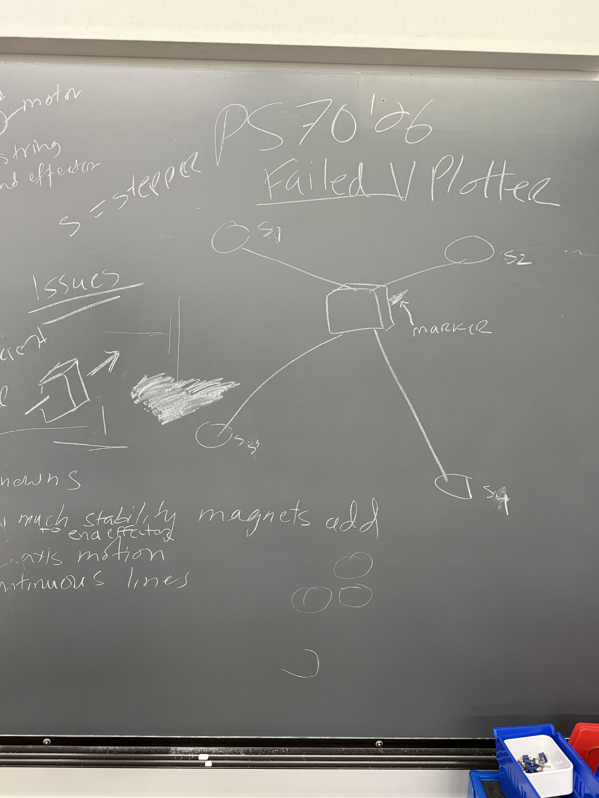
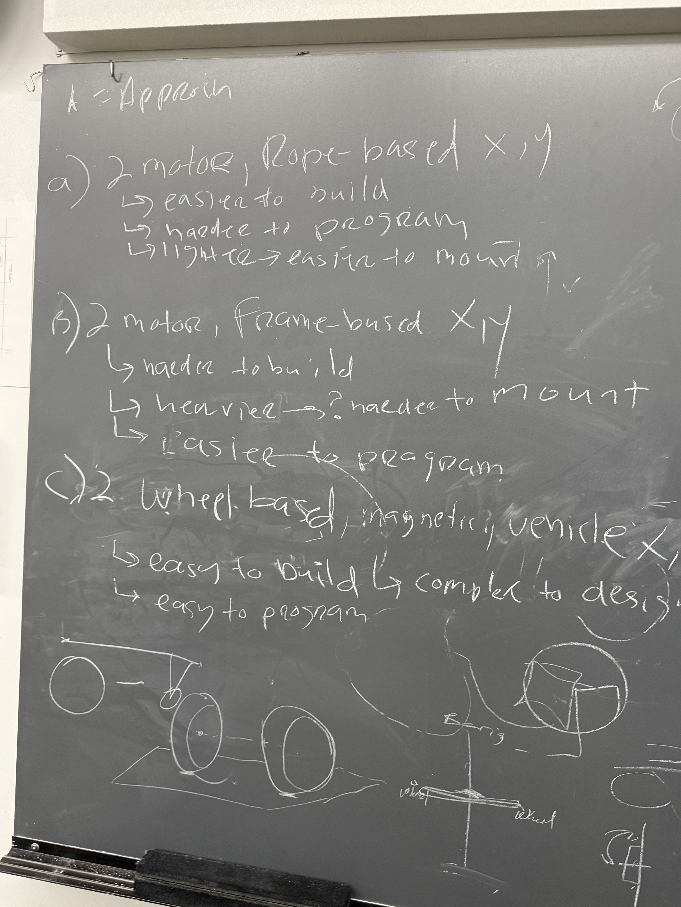
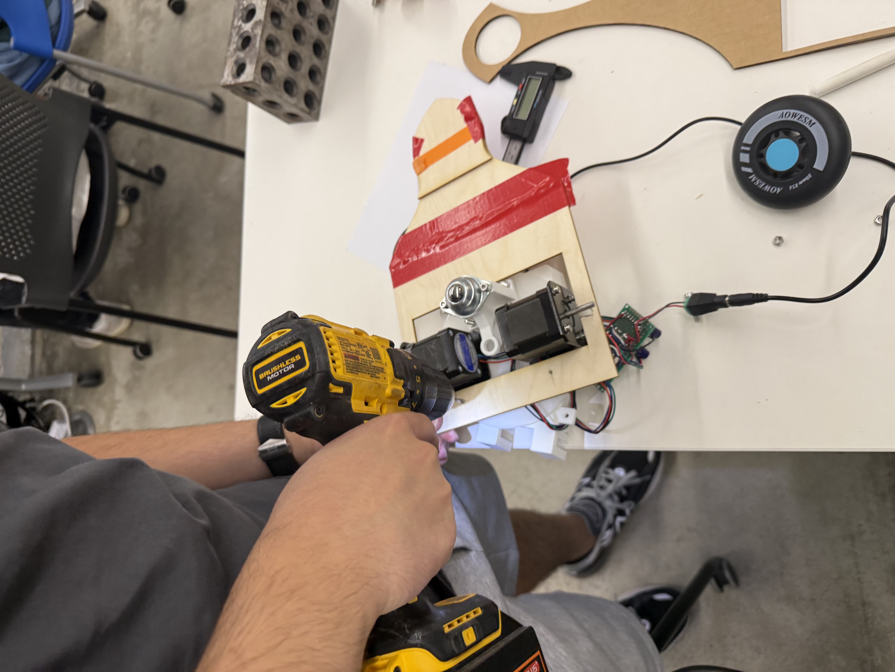

Chalkbot
Team: Arden · Gurmani · Matthew · Mert · Omer
Chalkbot is a gesture-controlled drawing machine that mounts magnetically to a standard chalkboard, turning it into a low-cost, retrofittable drawing surface.
The assignment: assemble and code a drawing machine built around a shared mechanical template, then design a custom end effector and control scheme. Ours draws in chalk, and you drive it with your hand.
Final Result
Student's Choice AwardChalkbot won the Student's Choice Award for Most Novel End-Effector / Drawing Technique — recognition for turning a shared machine template into a working, gesture-driven chalkboard artist.
The award announcement — Chalkbot takes Most Novel End-Effector / Drawing Technique
How It Works
Mount
Magnetic Frame Mount
The machine template is held directly to a standard chalkboard with magnets, rather than a self-driving vehicle — the solution that came out of our first, more torque-hungry approach.
Drive
2-Motor XY Template
Two stepper motors drive the machine template's X and Y axes. We started with a custom-built magnetic vehicle, then adopted the class-provided template for reliability.
End Effector
Chalk Holder + Rack & Pinion
A spring-loaded chalk holder keeps constant pressure on the board, mounted at an angle to reduce drag, driven by an adapted rack-and-pinion mechanism.
Remote
Gesture Controller
A handheld remote built around an MPU6050 gyroscope/accelerometer, with a trigger for draw mode and a top button to switch modes.
Link
Remote → Machine
The remote talks to the machine over ESP-NOW, sending gesture and button state wirelessly with no router required.
Identity
Chalkbot
A gesture-controlled, chalkboard-mounted drawing machine — built as a low-cost, retrofittable upgrade to the traditional classroom chalkboard.
Why Chalkbot
Chalkbot retrofits onto any existing chalkboard rather than replacing it, keeping the cost and installation barrier low compared to a dedicated smartboard. It preserves the tactile, analog feel of chalk while adding a digital, gesture-based input layer on top of it — and because the mount is magnetic, it can move from board to board without any permanent hardware left behind.
Part 1: Exploration & Approach
Full Team · Chalkboard sketches · PrototypingOur assignment: build something that uses two stepper motors to move along two dimensions, with an end effector of our choice. We were drawn to a vertical plotter.
01
Learning From a Failed V-Plotter
Before building anything, we analyzed a previous semester's failed attempt at a vertical plotter for a glass surface with a marker end effector. Two issues stood out: the 4-stepper-motor string-based mechanism, and an end effector without enough Z-axis force or rigidity to hold the marker steady — the result was a machine that couldn't even draw a circle.

Mapping out why last semester's V-plotter didn't work — string mechanism, marker rigidity
→ PS70 Week 10 — Failed V-Plotter for PS70 '2602
Comparing Approaches
We laid out three mounting approaches for a chalkboard V-plotter, each with a magnet-based mount:
| Approach | Pros | Cons |
|---|---|---|
| A) 2-motor, rope-based X/Y | Easier to build, lighter → easier to mount | Harder to program |
| B) 2-motor, frame-based X/Y | Easier to program | Harder to build, heavier → likely harder to mount |
| C) 2-wheel magnetic vehicle X/Y | Easy to build, easy to program | Complex to design |

Weighing rope-based, frame-based, and wheel-based mounting approaches
We tested mounting options for each: the frame-based approach came in around 3 kg with a promising single-magnet chalk-mount test; the wheel-based approach was lighter at 1.6 kg and also held well in a magnet test. That pointed us toward Approach C — a 2-wheel magnetic vehicle.
03
First Attempt — The Magnetic Vehicle
PivotedWe found an existing 2-stepper-motor, wheel-and-ball-bearing chassis and protoboard from a past lab project and adapted it — mounting it to the blackboard by adding magnets at a distance. It worked, but needed far more torque than we'd budgeted for to actually move around reliably. Too ambitious for the timeline, so we pivoted to the class-provided machine template instead.

Adapting a recycled lab chassis into a magnetically-mounted vehicle
| Pin | Left Wheel | Right Wheel |
|---|---|---|
| Step | D4 | D9 |
| Direction | D5 | D7 |
Pin configuration for the early magnetic vehicle prototype
04
The Pivot — Machine Template
This workedWe switched to the machine template provided for the assignment and mounted it to the blackboard magnetically — the approach that made it into the final build.
Part 2: Design Engineering
Design & Fabrication · SolidWorks · Prusa MK4SAlongside the mechanical build, the team handled the CAD modeling for every supporting component — covers, housings, and the end effector's mounting hardware.
01
Telescopic Axis Cover
Four styles were iterated before landing on a version that telescopes cleanly with the machine's full range of motion, protecting the axes from chalk dust while it draws.
02
The Remote Enclosure
The housing for the remote's electronics — trigger, top button, and all — went through nine rounds of modeling, slicing, and printing before landing on its final form: a smooth, tapered, teardrop-like shape with two buttons shaped to feel satisfying to press.
03
End Effector — Rack & Pinion Chalk Holder
The team worked out a rack-and-pinion mechanism for the chalk holder, adapting an existing rack-and-pinion print to drive it. A few concepts led the way there:

Early-stage end effector design — a ball-transfer roller and flange, explored for smooth, low-friction gliding across the board

Board magnet mount — holds the end effector flush against the board alongside the machine's main magnetic mount

Single-Output End Effector Stabilizer — keeps the chalk holder steady and aligned mid-stroke
A multicolor version of the end effector, designed in OnShape, is ready to go as a v2 upgrade — letting Chalkbot switch chalk colors mid-drawing.
→ OnShape — Multicolor End Effector (v2)Part 3: Electronics & Control
Matthew + Mert · MPU6050 · Wireless Remote01
Assembly & the Rebuild
The machine's electronics were wired and assembled early on, then rebuilt from scratch partway through once we traced a mismatch against the schematic — the rebuild is what finally got the machine moving reliably.
02
The Remote's Brain — MPU6050
The remote's gesture sensing is built around an MPU6050, a 6-axis inertial measurement unit combining a 3-axis gyroscope with a 3-axis accelerometer on one chip. The gyroscope measures rotational (angular) velocity around each axis, while the accelerometer measures linear acceleration — including the constant pull of gravity, which lets the board infer its tilt relative to the ground. Combining both signals gives a stable read on the remote's orientation as you move it, which gets translated into motion on the machine.
03
Remote Control Logic
The remote has two inputs: a trigger and a top button. Holding the trigger down engages draw mode; the top button toggles between free-move and draw mode.
The Code
// Chalkbot — Final Control Code
// Remote (MPU6050 + buttons) talks to the machine over ESP-NOW;
// gesture data drives the X/Y steppers, and button state switches
// between free-move and draw mode.
#include <AccelStepper.h>
#include <espnow.h>
#include <Wire.h>
#include <MPU6050.h>
// ---- Machine (receiver) pins ----
const int stepPinX = D4;
const int dirPinX = D5;
const int stepPinY = D9;
const int dirPinY = D7;
AccelStepper motorX(1, stepPinX, dirPinX);
AccelStepper motorY(1, stepPinY, dirPinY);
// ---- Remote input state (received wirelessly) ----
bool triggerHeld = false; // B1 — held down = draw mode
bool modeToggle = false; // B2 — toggles free-move vs draw
void setup() {
Serial.begin(115200);
motorX.setMaxSpeed(4000);
motorY.setMaxSpeed(4000);
}
void loop() {
// Read gesture data (pitch/roll) and button states from the remote
// Map gesture to X/Y target position or velocity
// Engage the chalk holder when the trigger is held; lift when released
// Toggle free-move vs draw mode with the top button
motorX.run();
motorY.run();
}Appendix — Early Prototype Code
From the exploration phase, before the pivot — a simple test accelerating both wheels of the magnetic vehicle prototype in alternating directions.
#include <AccelStepper.h>
const int stepPin1 = D4; // LEFT WHEEL
const int dirPin1 = D5;
const int stepPin2 = D9;
const int dirPin2 = D7;
const int NUM_STEPPERS = 2;
AccelStepper steppers[NUM_STEPPERS] = {
AccelStepper(1, stepPin1, dirPin1),
AccelStepper(1, stepPin2, dirPin2)
};
void setup() {
}
int spinDirection = 1;
void loop() {
for (int currentStepper = 0; currentStepper < NUM_STEPPERS - 1; currentStepper++) {
spinDirection = spinDirection * -1;
int maxSpeed = 4000 * spinDirection;
int speed = 4000 * spinDirection;
AccelStepper &stepper = steppers[currentStepper];
stepper.setMaxSpeed(maxSpeed);
stepper.setSpeed(speed);
stepper.runSpeed();
}
}The Team
Arden — sourced materials for the build.
Gurmani — CAD design and fabrication: the axis cover, remote enclosure, and end effector mounting hardware.
Matthew — magnetic blackboard mount, machine electronics, remote circuit and gesture coding.
Mert — circuit assembly and the multicolor end effector design.
Omer — end effector concept exploration.